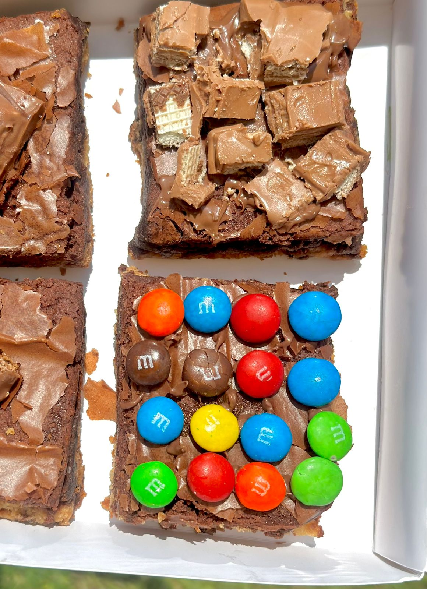

Nuestra Misión
frecer una experiencia excepcional a nuestros clientes a través de brownies de alta calidad, cuidadosamente seleccionado de productores locales y servido en un ambiente que promueve la convivencia y el bienestar. Nos esforzamos por ser un referente en la comunidad, fomentando prácticas sostenibles y apoyando la economía local de Acapulco. Se basa en crear momentos de felicidad y sabor a través de brownies artesanales de alta calidad, hechos con ingredientes frescos y recetas innovadoras.
